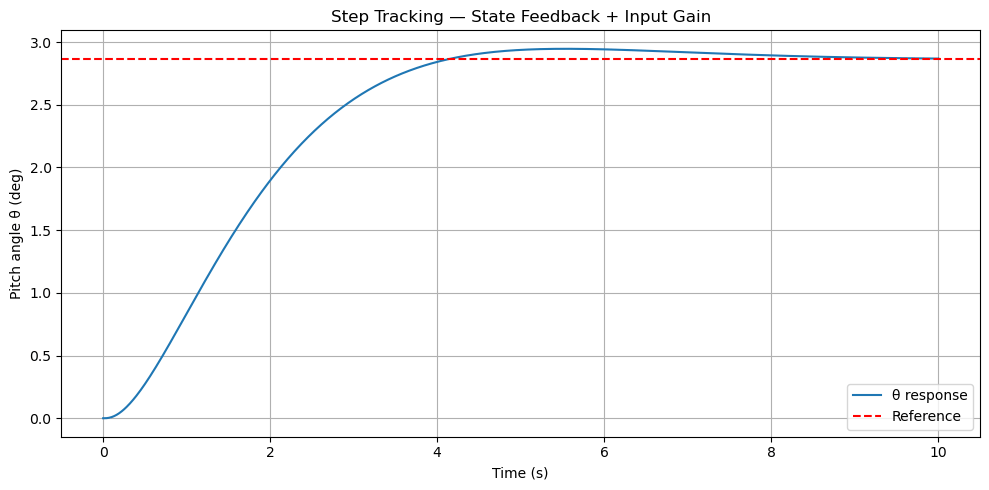
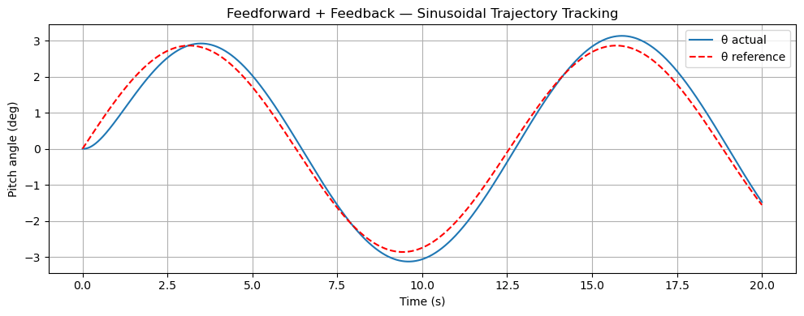
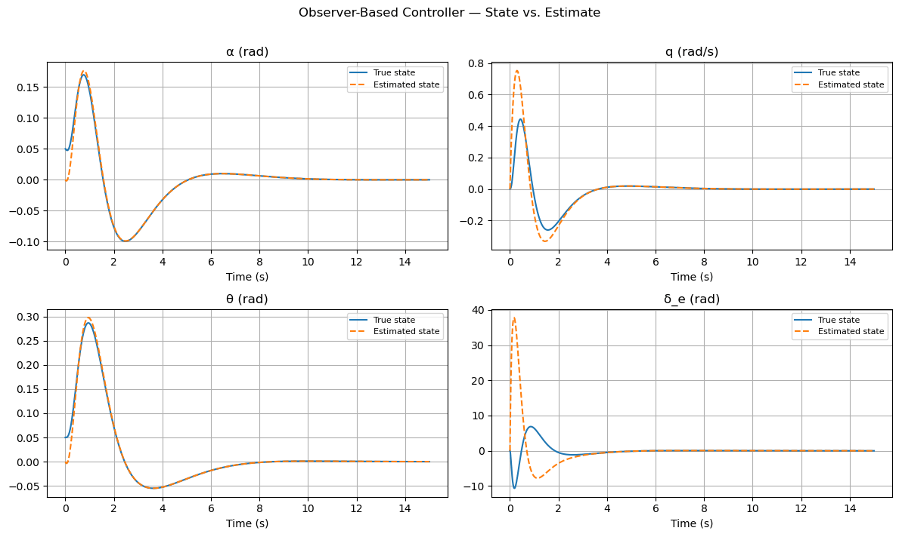
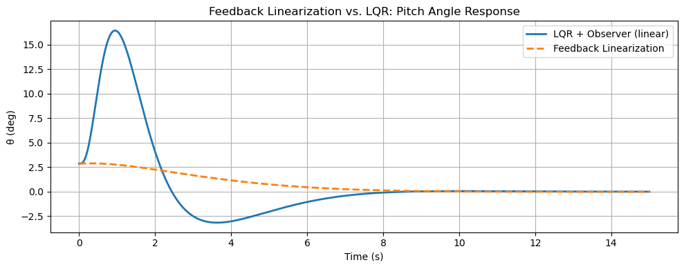
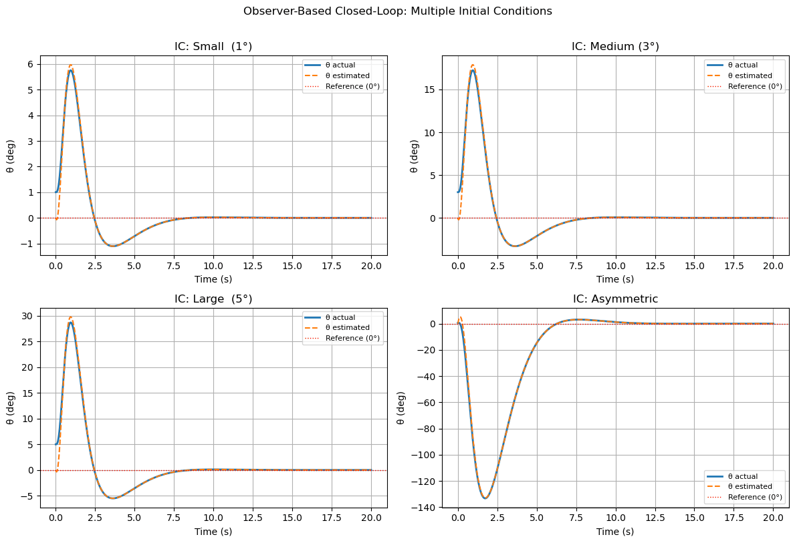
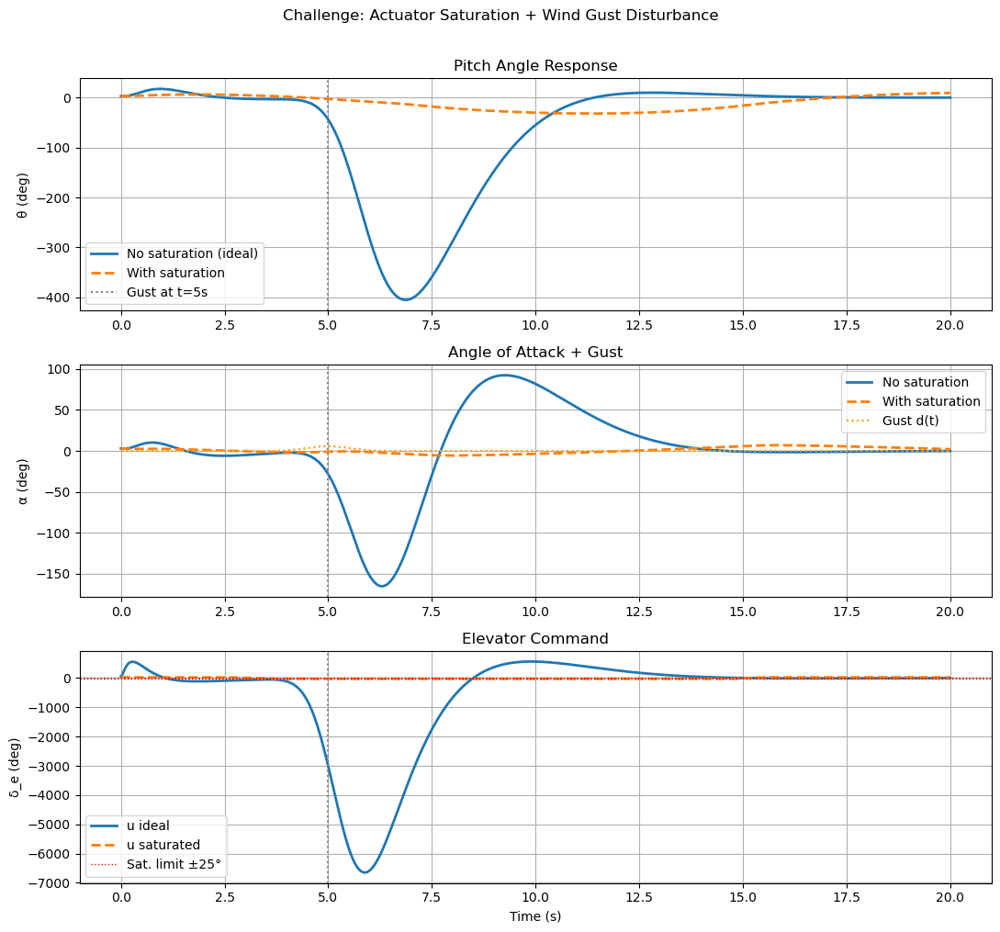

F-16 Longitudinal Flight Control
A complete control design for an unstable, linearized F-16 pitch model, built in Python. It stabilizes the aircraft, estimates the states it can't measure, tracks a commanded pitch trajectory, and then stress-tests the design with actuator limits, a wind gust, and uncertain aerodynamics.
- Course
- MEC 560, Stony Brook (Prof. Amin Fakhari)
- Type
- Individual project
- Completed
- May 2026
- Tools
- Python, NumPy, SciPy, python-control, SymPy, Matplotlib, Jupyter
Results at a glance
The challenge
The project called for an unstable dynamic system with at least four states and a full control pipeline: state feedback, observers, tracking, and robustness analysis. I chose the F-16's longitudinal (pitch-plane) dynamics, with four states: angle of attack α, pitch rate q, pitch angle θ, and elevator deflection δe. Only α and θ are measured.
The model is linearized about straight-and-level trim at 10,000 ft and Mach 0.5, using Stevens & Lewis parameters. The published linearization was open-loop stable, so I increased the pitch stiffness Mα from 0.8225 to 1.50 to represent a relaxed-static-stability (aft center of gravity) configuration. That gives an unstable short-period pole at +0.1174.
This instability is a deliberate modeling choice, not published F-16 data.
What I designed
- Open-loop analysis: eigenvalues, BIBO stability, controllability and observability (both full rank) and minimality.
- LQR state feedback: weights that penalize pitch angle most, moving every closed-loop pole into the left half-plane (slowest at −0.61 ± 0.47j).
- Reference tracking: an input gain for zero steady-state error on pitch steps, plus a feedforward-and-feedback law, u = −K(x − xd), for a sinusoidal pitch command. The desired angle of attack comes from the pitch-acceleration equation.
- Observers: a full-order Luenberger observer, plus a reduced-order observer that estimates only q and δe. I confirmed the separation principle numerically on the 8-state augmented system.
- Feedback linearization: input-output linearization with relative degree 3, reducing pitch to a triple integrator, as a comparison to LQR.
- Stress tests: four initial conditions, a 28-trial Monte Carlo sweep with ±20% error in Zα, Mα and Mq, and elevator saturation at ±25° combined with a wind gust.
Tracking


Observer-based control


Stress tests
Initial conditions
From 1°, 3° and 5° perturbations, every case returned to trim, with steady-state error under 0.001° and settling in about 10.4 s. An asymmetric start with nonzero pitch rate produced a large linear-model transient: the observer starts at zero, so the controller briefly acts on a wrong estimate while the unstable mode grows, before recovering.

Actuator saturation and wind gust
A 0.1 rad (5.7°) Gaussian gust on angle of attack hit at 5 s. With no elevator limit, the linear controller demanded unrealistic elevator commands and pitch swung to about −400° before recovering. With the realistic ±25° limit, the swing stayed small, but saturation was active 90.9% of the time and pitch settled 9.06° off trim. That is bounded, not a success; it calls for anti-windup or MPC.

Robustness
Under ±20% random error in three aerodynamic derivatives, only 4 of 28 trials (14%) were stable by eigenvalues of the full perturbed 8-state system, and 2 of 28 (7%) settled in a 40 s simulation. With Mα already at the destabilized 1.50, a +20% error pushes the short-period pole back into the right half-plane. Plant error also breaks the separation principle, so controller and observer no longer act independently.
Limitations and next steps
- Not robust: the nominal design fails under realistic parameter error. Next steps are H∞ synthesis or gain scheduling across the flight envelope.
- Large observer gains: the reduced-order observer has gain entries around 8,700, caused by a structural zero and the gap between actuator and airframe timescales. That would amplify sensor noise on real hardware, which motivates a Kalman filter.
- Model fidelity: a linear, longitudinal-only model at one trim point, with a first-order actuator (no rate limits) and a deterministic gust rather than Dryden turbulence.
- Saturation: needs anti-windup or constraint-aware control, such as MPC.
What I learned
- Numbers and conclusions have to match. The biggest failure mode across my drafts was text that contradicted the simulation output.
- A single snapshot can misclassify a slow but stable trajectory. Robustness checks need long simulation windows and more than one criterion.
- Place observer poles relative to the slowest dominant controller pole, with the actuator dynamics in mind. Scaling from the fastest pole gave impractically large gains.
- Notebook state is a trap: a second definition of A further down silently overwrote my corrected unstable matrix.
- Using both ud = K xd and −K(x − xd) double-counts the desired state and doubled the overshoot until I fixed it.
References: Stevens, Lewis & Johnson, Aircraft Control and Simulation, 3rd ed. (2015); Nguyen et al., NASA TP-1538 (1979); AeroBenchVVPython; Hespanha, Linear Systems Theory, 2nd ed. (2018).